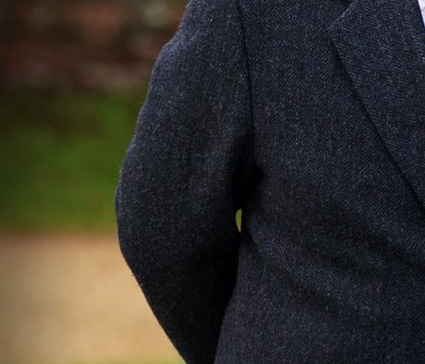
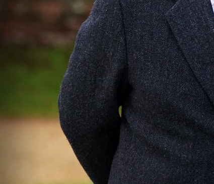

Andrew Mountbatten Windsor
For Whom the Bell Tolls
King Charles III has stripped his brother, Prince Andrew, of all his titles and given him an eviction notice to leave the Royal Lodge where he once entertained the likes of Jeffrey Epstein, Ghislaine Maxwell and Harvey Weinstein, all in the same stay. The Royals want distance from once Prince Andrew who will now have to settle for a first name and surname like the rest of us commoners. Andrew will now be known as Andrew Mountbatten Windsor. The BBC recently inserted the title "Mr" where "Prince" once went in their latest coverage of the Royal's fall from grace.
(JMK) 10/31/25 - The Royal Family is distancing itself from Andrew in light of his years long scandal with the late Jeffrey Epstein and the now convicted, Ghislaine Maxwell. The statement from Buckingham Palace in full reads: "His Majesty has today initiated a formal process to remove the style, titles and honours of Prince Andrew. Prince Andrew will now be known as Andrew Mountbatten Windsor. His lease on Royal Lodge has, to date, provided him with legal protection to continue in residence. Formal notice has now been served to surrender the lease and he will move to alternative private accommodation. These censures are deemed necessary, notwithstanding the fact that he continues to deny the allegations against him. Their Majesties wish to make clear that their thoughts and utmost sympathies have been, and will remain with, the victims and survivors of any and all forms of abuse."
Andrew, 65, has been embroiled in a 15-year-long controversy regarding his friendship with Epstein, which intensified following the publication of a posthumous memoir by Virginia Giuffre. Giuffre accused Andrew of sexually assaulting her during her teenage years. Giuffre, who the prince asserts he has never met, tragically took her own life in April at the age of 41. Andrew has consistently denied all allegations leveled against him.
In reaction to the news about Andrew, Giuffre’s brother, Sky Roberts, and his wife, Amanda Roberts, issued a statement to PEOPLE, saying: “Today, an ordinary American girl from an ordinary American family brought down a British prince with her truth and extraordinary courage. Virginia Roberts Giuffre, our sister, a child when she was sexually assaulted by Andrew, never stopped fighting for accountability for what had happened to her and to countless other survivors like her. Today, she declares victory."
The BBC reported in their article, Prince Andrew hosted Epstein, Maxwell and Weinstein at Royal Lodge, "Prince Andrew hosted Jeffrey Epstein, Ghislaine Maxwell and Harvey Weinstein at Royal Lodge, the prince's private home in the grounds of Windsor Castle. The trio visited the Windsor mansion as part of his daughter Beatrice's masked ball 18th birthday celebrations in 2006, two months after a US arrest warrant had been issued for Epstein for the sexual assault of a minor. It had previously been reported that Epstein, Maxwell and Weinstein visited Windsor Castle for the event, but not that they had been hosted at Andrew's private home. It is understood that Epstein, Maxwell and Weinstein visited Royal Lodge ahead of the main party, which took place in the state rooms of Windsor Castle and involved a champagne reception and banquet."
To date, I have never been asked if I had any connection whatsoever to Jeffrey Epstein or Ghislaine Maxwell. I have been accused and investigated for things similar to the charges against Epstein and Maxwell. In 2006, a news article stated, something to the effect, that the CIA had been investigating me for leading an international sex ring that supplied young girls to GOP politicians and diplomats in international locations. Also in 2006, my San Francisco attorney, Gayle Gutekunst, was in talks with a Department of Homeland Security ICE agent who informed her that they were investigating me for human trafficking minors for sex from Asia into Europe. According to that same source, DHS ICE conducted multiple international investigations against me from 2006 until 2010. Though similar in nature, no one, that I know of, has ever made a connection between the accusations and investigations against me in 2006 to the charges against Epstein and the conviction of Maxwell for similar criminal activities. If I've ever been investigated by the FBI, DHS, Europol or any other law enforcement agency for any connection I might have had to Epstein or Maxwell or both, I know nothing of it.
The only thing left for Andrew is to be criminally charged, which I see as a strong possibility in the near future. Andrew was accused of raping a then teen, Virginia Giuffre. If he is guilty of this, he should be arrested, charged with her rape, convicted of her rape and put in prison. Justice is for all, regardless of one's station in life, that has now been stripped from him by the Royal Family.
Whether guilty or not guilty, the latest fate of Andrew Mountbatten Windsor is the most significant example of how destructive any connection to Jeffrey Epstein and Ghislaine Maxwell can be. It is no matter that Andrew denies the allegations against him. Andrew's case has set a precedence for future cases that hold any suspicion that one might have had a connection with Epstein or Maxwell. Andrew's latest dismantling has set the tone for future actions the likes that the #metoo movement has never known. Andrew Mountbatten Windsor exemplifies that no amount of status, power, prestige, or wealth can shield anyone from the repercussions of their association with Epstein and Maxwell, whether for friendship or for criminal gain.
In the words of the writer, John Donne, "No man is an island, entire of itself. Each is a piece of the continent, a part of the main. If a clod be washed away by the sea, Europe is the less. As well as if a promontory were. As well as if a manner of thine own, or of thine friend's were. Each man's death diminishes me. For I am involved in mankind. Therefore, send not to know, for whom the bell tolls. It tolls for thee."